其中 $m_P$ 为称量形式的质量，$m_s$ 为试样质量。
$$F = \frac{a \times M_{\text{被测物}}}{b \times M_{\text{称量形式}}}$$$a/b$ 由称量形式与被测物之间的化学计量关系确定。
| 被测物 | 沉淀形式 | 称量形式 | 换算因子 $F$ | 数值 |
|---|---|---|---|---|
| $\text{Fe}$ | $\text{Fe(OH)}_3$ | $\text{Fe}_2\text{O}_3$ | $\dfrac{2M_{\text{Fe}}}{M_{\text{Fe}_2\text{O}_3}}$ | $\dfrac{2 \times 55.85}{159.7} = 0.6994$ |
| $\text{Al}$ | $\text{Al(C}_9\text{H}_6\text{NO)}_3$ | $\text{Al}_2\text{O}_3$ | $\dfrac{M_{\text{Al}_2\text{O}_3}}{2M_{\text{Al(ox)}_3}}$ | $\dfrac{101.96}{918.88} = 0.1110$ |
| $\text{SO}_4^{2-}$（以 $\text{SO}_3$ 表示） | $\text{BaSO}_4$ | $\text{BaSO}_4$ | $\dfrac{M_{\text{SO}_3}}{M_{\text{BaSO}_4}}$ | $\dfrac{80.06}{233.4} = 0.3430$ |
| $\text{Cl}^-$ | $\text{AgCl}$ | $\text{AgCl}$ | $\dfrac{M_{\text{Cl}}}{M_{\text{AgCl}}}$ | $\dfrac{35.45}{143.32} = 0.2474$ |
| $\text{Ca}$ | $\text{CaC}_2\text{O}_4$ | $\text{CaO}$ | $\dfrac{M_{\text{Ca}}}{M_{\text{CaO}}}$ | $\dfrac{40.08}{56.08} = 0.7147$ |
| $\text{Mg}$ | $\text{MgNH}_4\text{PO}_4$ | $\text{Mg}_2\text{P}_2\text{O}_7$ | $\dfrac{2M_{\text{Mg}}}{M_{\text{Mg}_2\text{P}_2\text{O}_7}}$ | $\dfrac{2 \times 24.31}{222.55} = 0.2185$ |
| $\text{Fe}_2\text{O}_3$ | $\text{Fe(OH)}_3$ | $\text{Fe}_2\text{O}_3$ | $\dfrac{M_{\text{Fe}_2\text{O}_3}}{M_{\text{Fe}_2\text{O}_3}} = 1$ | $1.000$ |
称量形式为 $\text{Fe}_2\text{O}_3$，被测物为 Fe：
$F = \frac{2 \times M_{Fe}}{1 \times M_{Fe_2O_3}} = \frac{2 \times 55.85}{159.7} = 0.6994$
$w_{Fe} = \frac{0.2040 \times 0.6994}{0.5000} \times 100\% = 28.55\%$
$F = \frac{M_{SO_3}}{M_{BaSO_4}} = \frac{80.06}{233.4} = 0.3430$
$m_{SO_3} = 0.4660 \times 0.3430 = 0.1598\;\text{g}$
$w(\text{CaO}) = \dfrac{0.2800}{1.0000} \times 100\% = 28.00\%$（称量形式就是 CaO，所以 $F = 1$）
$w(\text{Ca}) = \dfrac{0.2800 \times F}{1.0000} \times 100\% = \dfrac{0.2800 \times 0.7147}{1.0000} \times 100\% = 20.01\%$
其中 $F = \dfrac{M_{\text{Ca}}}{M_{\text{CaO}}} = \dfrac{40.08}{56.08} = 0.7147$
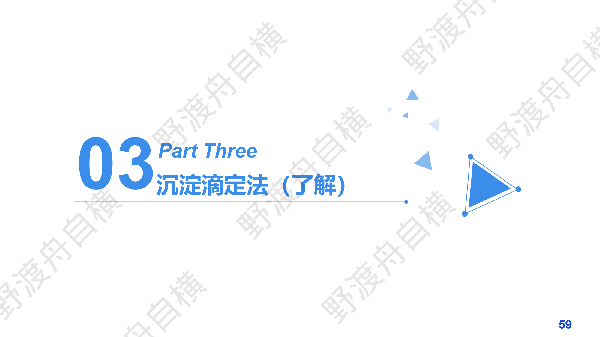
PPT: 银量法 — 莫尔法、佛尔哈德法、法扬司法
银量法基于 $\text{Ag}^+$ 与卤素离子的沉淀反应：$\text{Ag}^+ + \text{X}^- \rightarrow \text{AgX}\downarrow$
有三种经典方法：
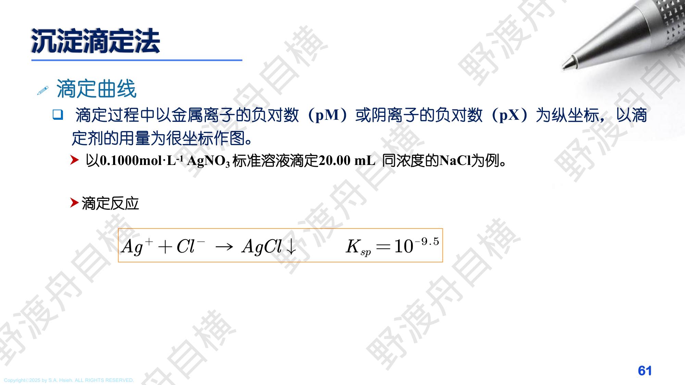
PPT: 沉淀滴定曲线
以金属离子的负对数（pM）或阴离子的负对数（pX）为纵坐标，以滴定剂的用量为横坐标作图。
以 0.1000 mol/L $\text{AgNO}_3$ 标准溶液滴定 20.00 mL 同浓度的 NaCl 为例：
滴定反应：$\text{Ag}^+ + \text{Cl}^- \to \text{AgCl}\downarrow$，$K_{sp} = 10^{-9.5}$
化学计量点时：$[\text{Ag}^+] = [\text{Cl}^-] = \sqrt{K_{sp}} = 10^{-4.75}$，即 $\text{pAg} = \text{pCl} = 4.75$
滴定突跃范围约 $\pm 2$ 个 pAg 单位。$K_{sp}$ 越小，突跃越大，终点越明显。
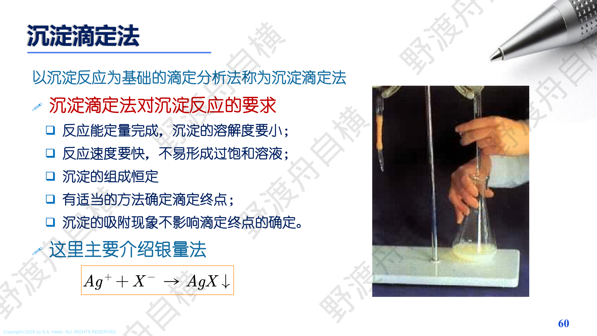
PPT: 莫尔法(Mohr)原理
以 $\text{K}_2\text{CrO}_4$ 为指示剂。化学计量点后，过量 $\text{Ag}^+$ 与 $\text{CrO}_4^{2-}$ 生成砖红色 $\text{Ag}_2\text{CrO}_4$ 沉淀指示终点。
$$\text{2Ag}^+ + \text{CrO}_4^{2-} \rightarrow \text{Ag}_2\text{CrO}_4\downarrow(\text{砖红色})$$| 项目 | 要求 |
|---|---|
| pH 范围 | 6.5~10.5（酸性：$\text{CrO}_4^{2-}$ 变为 $\text{Cr}_2\text{O}_7^{2-}$；碱性：$\text{Ag}^+$ 沉淀为 AgOH） |
| 指示剂浓度 | $5 \times 10^{-3}$ mol/L（过多终点提前，过少终点滞后） |
| 可测离子 | $\text{Cl}^-$, $\text{Br}^-$（不可测 $\text{I}^-$ 和 $\text{SCN}^-$） |
| 滴定方式 | 直接滴定（$\text{AgNO}_3$ 滴定 $\text{Cl}^-$） |
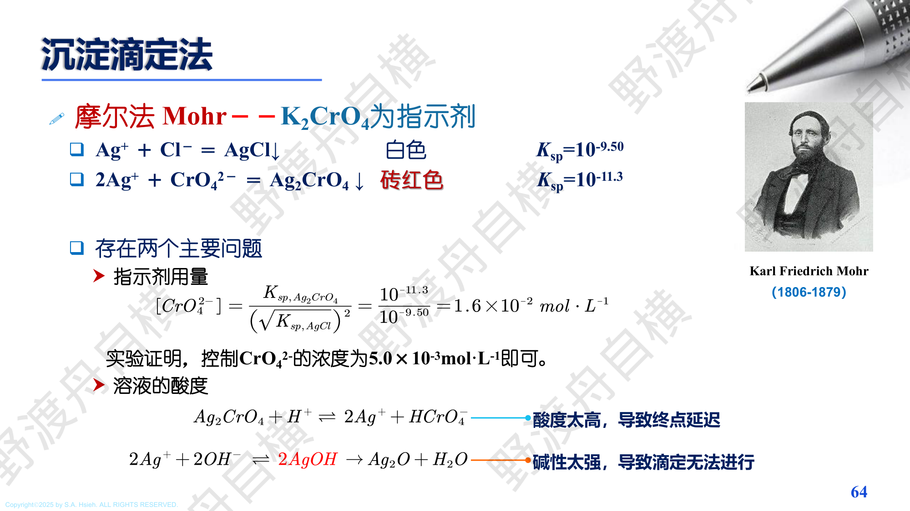
PPT: Mohr 法指示剂浓度的计算
要求：化学计量点时，$\text{Ag}^+$ 恰好能使 $\text{Ag}_2\text{CrO}_4$ 开始沉淀。
由 $K_{sp,\text{Ag}_2\text{CrO}_4} = 10^{-11.3}$，化学计量点时 $[\text{Ag}^+] = \sqrt{K_{sp,\text{AgCl}}} = \sqrt{10^{-9.50}}$
$$[\text{CrO}_4^{2-}] = \frac{K_{sp,\text{Ag}_2\text{CrO}_4}}{[\text{Ag}^+]^2} = \frac{10^{-11.3}}{(\sqrt{10^{-9.50}})^2} = 10^{-1.8} \approx 1.6 \times 10^{-2}\;\text{mol/L}$$实验证明，控制 $[\text{CrO}_4^{2-}]$ 约为 $5.0 \times 10^{-3}\;\text{mol/L}$ 即可满足要求。
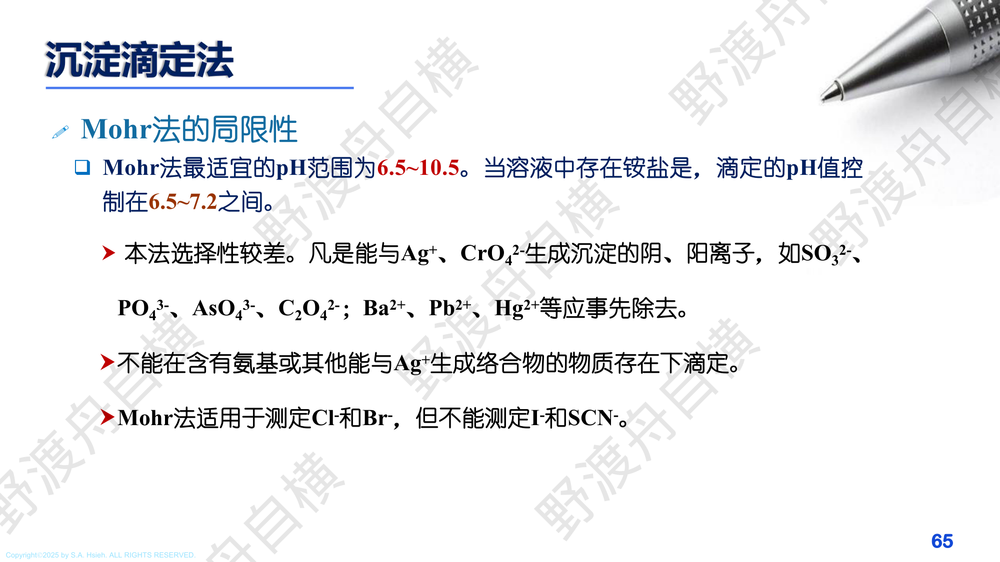
PPT: Mohr 法的局限性
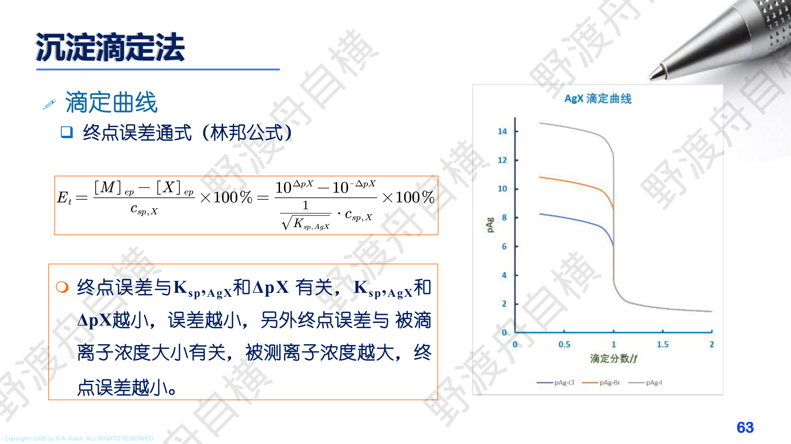
PPT: 佛尔哈德法(Volhard)原理
以铁铵矾（$\text{NH}_4\text{Fe(SO}_4)_2$）为指示剂，在 $\text{HNO}_3$ 酸性介质中，用 $\text{NH}_4\text{SCN}$（或 KSCN）标准溶液回滴过量的 $\text{Ag}^+$。
$$\text{Ag}^+(\text{过量}) + \text{X}^- \rightarrow \text{AgX}\downarrow$$ $$\text{Ag}^+(\text{剩余}) + \text{SCN}^- \rightarrow \text{AgSCN}\downarrow$$终点：$\text{Fe}^{3+} + \text{SCN}^- \rightarrow \text{FeSCN}^{2+}(\text{血红色})$
| 项目 | 要求 |
|---|---|
| 介质 | $\text{HNO}_3$ 酸性（0.1~1 mol/L），酸性条件是 Volhard 法的优势 |
| 可测离子 | $\text{Cl}^-$, $\text{Br}^-$, $\text{I}^-$, $\text{SCN}^-$（最广泛） |
| 滴定方式 | 回滴法（先加过量 $\text{AgNO}_3$，再用 $\text{SCN}^-$ 回滴） |
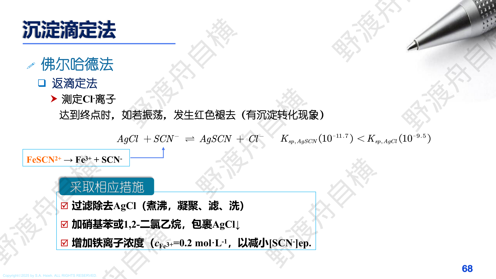
PPT: Volhard 法测 Cl$^-$ 的沉淀转化问题及措施
$K_{sp,\text{AgSCN}} = 10^{-11.7} < K_{sp,\text{AgCl}} = 10^{-9.5}$，即 AgSCN 比 AgCl 更难溶。回滴过程中 $\text{SCN}^-$ 会与 AgCl 发生沉淀转化反应：
$$\text{AgCl} + \text{SCN}^- \rightleftharpoons \text{AgSCN} + \text{Cl}^-$$终点时红色褪去（有沉淀转化现象），导致终点偏晚、结果偏低。
三种解决方法：测 $\text{Br}^-$、$\text{I}^-$ 时无此问题（AgBr、AgI 比 AgSCN 更难溶）。
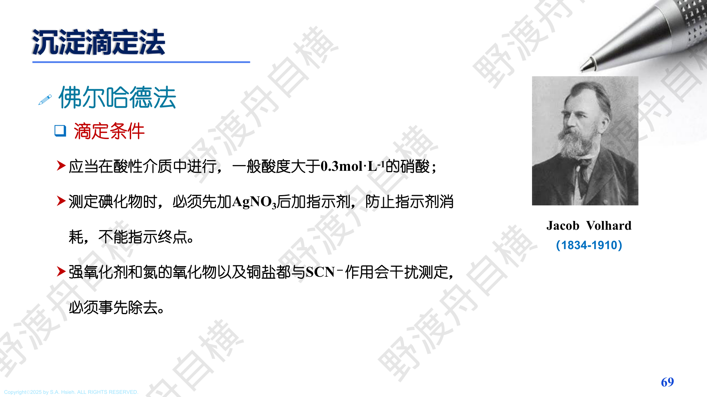
PPT: Volhard 法滴定条件
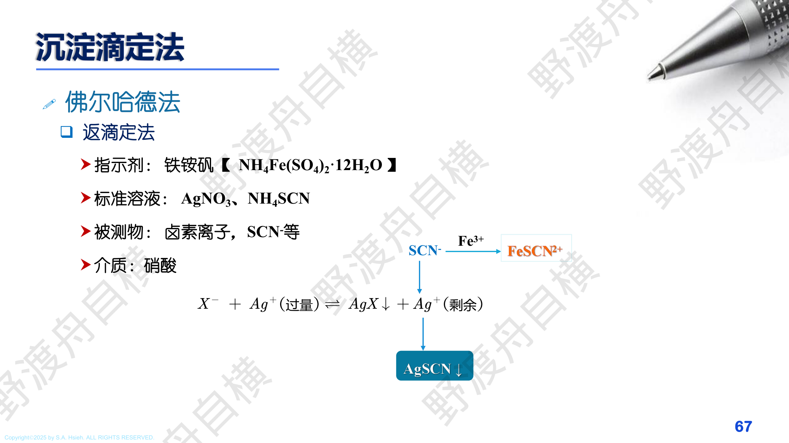
PPT: 法扬司法(Fajans)原理
使用吸附指示剂。指示剂为有机阴离子染料，在化学计量点前后，沉淀表面电荷发生变化，指示剂被吸附/脱附导致颜色改变。
以荧光黄（$\text{HFl}$, 阴离子 $\text{Fl}^-$）测 $\text{Cl}^-$ 为例：
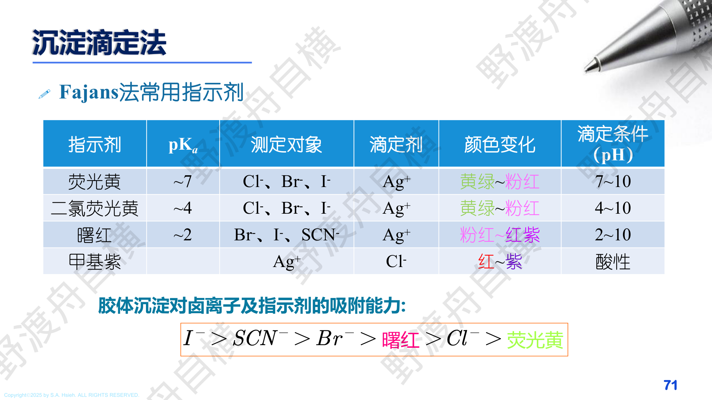
PPT: Fajans 法常用吸附指示剂一览
| 指示剂 | $pK_a$ | 测定对象 | 滴定剂 | 颜色变化 | 滴定条件 (pH) |
|---|---|---|---|---|---|
| 荧光黄 | ~7 | $\text{Cl}^-$, $\text{Br}^-$, $\text{I}^-$ | $\text{Ag}^+$ | 黄绿 $\to$ 粉红 | 7~10 |
| 二氯荧光黄 | ~4 | $\text{Cl}^-$, $\text{Br}^-$, $\text{I}^-$ | $\text{Ag}^+$ | 黄绿 $\to$ 粉红 | 4~10 |
| 曙红 | ~2 | $\text{Br}^-$, $\text{I}^-$, $\text{SCN}^-$ | $\text{Ag}^+$ | 粉红 $\to$ 红紫 | 2~10 |
| 甲基紫 | -- | $\text{Ag}^+$ | $\text{Cl}^-$ | 红 $\to$ 紫 | 酸性 |
吸附能力顺序（由强到弱）：
$$\text{I}^- > \text{SCN}^- > \text{Br}^- > \underbrace{\text{曙红}}_{\text{(Eosin)}} > \text{Cl}^- > \underbrace{\text{荧光黄}}_{\text{(Fluorescein)}}$$指示剂的吸附能力必须小于被测离子，否则在化学计量点前就会被吸附，产生假终点。因此：
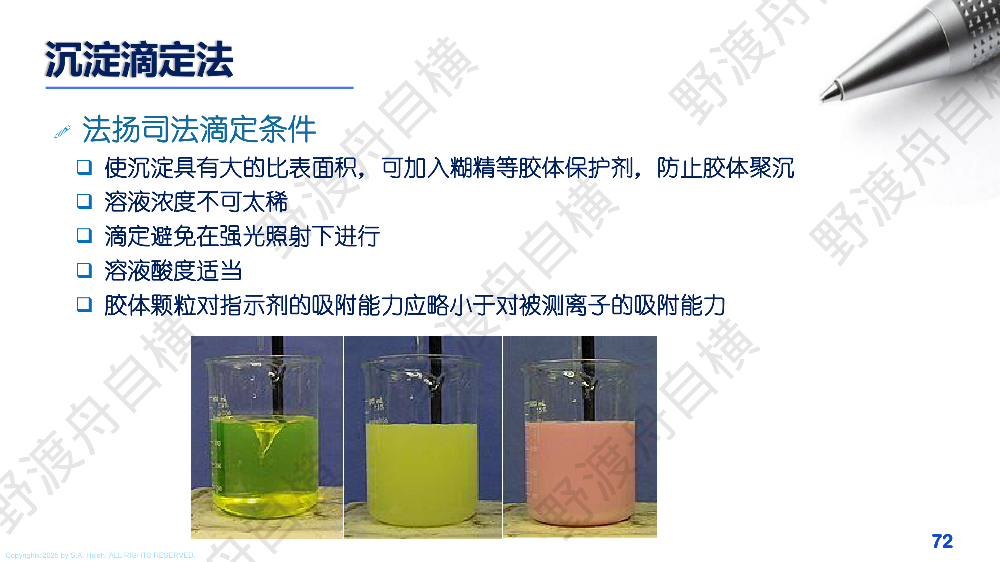
PPT: Fajans 法滴定条件
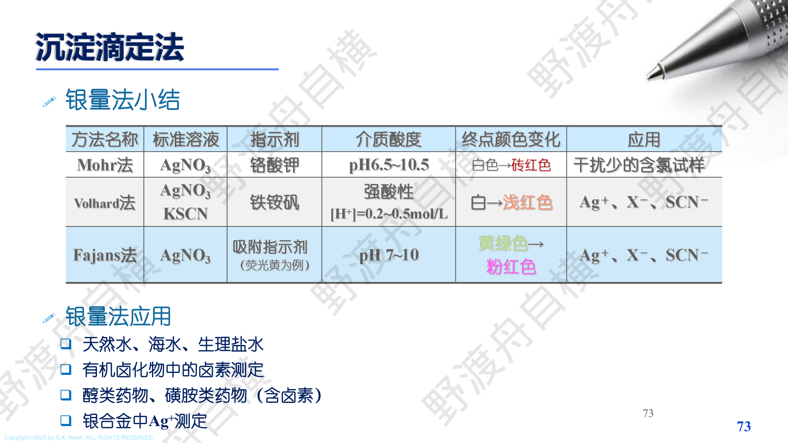
PPT: 银量法小结与应用
| 项目 | Mohr 法 | Volhard 法 | Fajans 法 |
|---|---|---|---|
| 标准溶液 | $\text{AgNO}_3$ | $\text{AgNO}_3$ + $\text{KSCN}$ | $\text{AgNO}_3$ |
| 指示剂 | 铬酸钾 $\text{K}_2\text{CrO}_4$ | 铁铵矾 $\text{Fe}^{3+}$ | 吸附指示剂（荧光黄为例） |
| 介质酸度 | pH 6.5~10.5 | 强酸性 $[\text{H}^+] = 0.2 \sim 0.5\;\text{mol/L}$ | pH 7~10（荧光黄） |
| 滴定方式 | 直接法（$\text{Ag}^+$ 滴 $\text{X}^-$） | 回滴法（$\text{SCN}^-$ 滴剩余 $\text{Ag}^+$） | 直接法 |
| 可测离子 | $\text{Cl}^-, \text{Br}^-$ | $\text{Ag}^+, \text{X}^-, \text{SCN}^-$（最广） | $\text{Ag}^+, \text{X}^-, \text{SCN}^-$ |
| 终点颜色变化 | 白色 $\to$ 砖红色 | 白色 $\to$ 浅红色 | 黄绿色 $\to$ 粉红色 |
| 应用特点 | 干扰少的含氯试样 | 酸性介质中最广泛 | 终点最敏锐 |
| 缺点 | pH 限制严、不能测 $\text{I}^-$ | 测 $\text{Cl}^-$ 需特殊处理 | 需胶体状态，避光 |
$n_{Ag^+} = 0.1000 \times 50.00 = 5.000\;\text{mmol}$
$n_{SCN^-} = 0.05000 \times 10.00 = 0.5000\;\text{mmol}$
$n_{Cl^-} = n_{Ag^+} - n_{SCN^-} = 5.000 - 0.500 = 4.500\;\text{mmol}$
$w_{Cl} = \frac{4.500 \times 10^{-3} \times 35.45}{0.3000} \times 100\% = 53.18\%$
$n_{Cl^-} = n_{Ag^+} = c \times V = 0.01000 \times 15.20 = 0.1520\;\text{mmol}$
$\rho_{Cl^-} = \dfrac{n_{Cl^-} \times M_{Cl}}{V_{\text{水样}}} = \dfrac{0.1520 \times 10^{-3} \times 35.45 \times 10^3}{0.1000} = 53.88\;\text{mg/L}$
$\text{Ag}_2\text{CrO}_4 \rightleftharpoons 2\text{Ag}^+ + \text{CrO}_4^{2-}$
设溶解度为 $s$，则 $[\text{CrO}_4^{2-}] = s$，$[\text{Ag}^+] = 2s + 0.010 \approx 0.010$（因 $s$ 很小）
$K_{sp} = [\text{Ag}^+]^2[\text{CrO}_4^{2-}] = (0.010)^2 \times s = 1.12 \times 10^{-12}$
$s = \dfrac{1.12 \times 10^{-12}}{1.0 \times 10^{-4}} = 1.12 \times 10^{-8}\;\text{mol/L}$
对比纯水中：$s_0 = \left(\dfrac{K_{sp}}{4}\right)^{1/3} = \left(\dfrac{1.12 \times 10^{-12}}{4}\right)^{1/3} = 6.5 \times 10^{-5}\;\text{mol/L}$
同离子效应使溶解度降低了约 $6000$ 倍。
$n_{\text{Ag}^+} = 0.1000 \times 25.00 = 2.500\;\text{mmol}$
$n_{\text{SCN}^-} = 0.08000 \times 5.00 = 0.4000\;\text{mmol}$
$n_{\text{Cl}^-} = 2.500 - 0.400 = 2.100\;\text{mmol}$
$n_{\text{NaCl}} = n_{\text{Cl}^-} = 2.100\;\text{mmol}$
$w(\text{NaCl}) = \dfrac{2.100 \times 10^{-3} \times 58.44}{0.2500} \times 100\% = 49.09\%$
Mohr 法计算最为简洁，因为是直接滴定，化学计量关系为 1:1。
问：沉淀重量法中加入过量沉淀剂的主要目的是什么？
答：利用同离子效应降低沉淀的溶解度，使沉淀更完全。一般过量 50%~100%，但不宜过多（否则盐效应使溶解度回升，且可能引入更多杂质）。
问：用重量法测定铁含量，沉淀为 $\text{Fe(OH)}_3$，灼烧为 $\text{Fe}_2\text{O}_3$，求换算因子。
答：$F = \dfrac{2M(\text{Fe})}{M(\text{Fe}_2\text{O}_3)} = \dfrac{2 \times 55.85}{159.7} = 0.6994$
注意：一个 $\text{Fe}_2\text{O}_3$ 含有 2 个 Fe 原子，所以分子上系数为 2。
问：在 $\text{PbSO}_4$ 沉淀的溶液中逐渐加入 $\text{Na}_2\text{SO}_4$，溶解度如何变化？
答：先降低（同离子效应占主导），后升高（盐效应占主导）。溶解度曲线呈 V 形。
问：$\text{CaF}_2$ 在 pH=3 的溶液中溶解度是否大于纯水中？为什么？
答：是。因为 $\text{F}^-$ 是弱酸 HF 的共轭碱，在酸性条件下 $\text{F}^-$ 被质子化生成 HF，降低了 $[\text{F}^-]$，平衡右移，溶解度增大（酸效应）。
详见 9.2 节中的完整计算例题。核心结论：同离子效应可使溶解度降低 $10^4$ 倍。
问：向 $\text{AgCl}$ 悬浊液中逐渐加入 $\text{NH}_3$ 溶液，溶解度如何变化？
答：
但本题考的是一个更复杂的情景：先向 AgCl 中加入 NaCl（同离子效应，溶解度降低），再加入 $\text{NH}_3$（配位效应，溶解度升高）。
问：当聚集速度大于定向速度时，生成何种沉淀？
答：生成无定形沉淀（非晶形沉淀）。因为离子来不及按有序结构排列就聚集在一起，形成无序结构。
反之，定向速度 > 聚集速度时生成晶形沉淀。
与 Quiz 2 Q7 相同考点。$F = \dfrac{2 \times 55.85}{159.7} = 0.6994$。
这是高频考点，几乎每次考试都会涉及换算因子的计算。
问：尿素与 $\text{ZnAc}_2$ 混合加热，是什么沉淀方法？
答：均匀沉淀法。尿素在加热条件下缓慢水解，在溶液内部均匀产生 $\text{OH}^-$，与 $\text{Zn}^{2+}$ 缓慢生成 $\text{Zn(OH)}_2$ 沉淀。优点是过饱和度低，沉淀颗粒大且纯净。
详见 9.3 节中的完整计算例题。
关键数据：$M_{\text{Al(C}_9\text{H}_6\text{NO)}_3} = 459.44$，$F = 26.98/459.44 = 0.05872$
例：$K_{sp}(\text{AgCl}) = 1.8 \times 10^{-10}$，$K_{sp}(\text{Ag}_2\text{CrO}_4) = 1.12 \times 10^{-12}$
虽然 $K_{sp}(\text{Ag}_2\text{CrO}_4)$ 更小，但 $s(\text{AgCl}) = 1.34 \times 10^{-5}$，$s(\text{Ag}_2\text{CrO}_4) = 6.5 \times 10^{-5}$
实际上 $\text{Ag}_2\text{CrO}_4$ 的溶解度更大！
$F = \dfrac{2M(\text{Fe})}{M(\text{Fe}_2\text{O}_3)}$，系数 2 在分子上（因为一个 $\text{Fe}_2\text{O}_3$ 对应 2 个 Fe）。
如果测 $\text{Mg}$，称量形式为 $\text{Mg}_2\text{P}_2\text{O}_7$，则 $F = \dfrac{2M(\text{Mg})}{M(\text{Mg}_2\text{P}_2\text{O}_7)}$，系数 2 同样在分子上。
$n(\text{Cl}^-) = n(\text{Ag}^+)_{\text{total}} - n(\text{SCN}^-)_{\text{回滴}}$